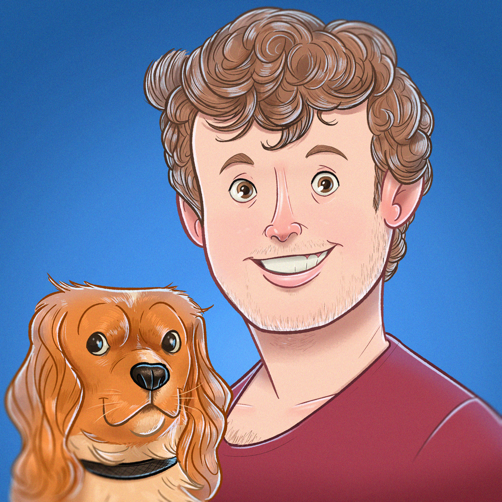

Not your typical geek; that’s how I would describe myself. I consider myself a social guy who’s always up
for a challenge and is eager to constantly learn
new things. I like working in teams and will not hesitate to push the rest of the team to new levels if
that’s within my possibilities.
Furthermore I’m very down to earth; I know where my knowledge begins and ends, therefore I think it’s my
responsibility to either apply my knowledge
where applicable or ask questions if something’s not clear to me; I’m responsible for my own learning.
I’m up for challenges in which I can freely interact with others, have some creative freedom and from which
I can learn a lot.
I have a preference for jobs in which I can combine analytical task with coding, though I prefer the latter
one.
{% assign educationCounter = 0 %}
{% for education in site.data.resume.education %}
{{education.name}}
{% if education.period != ""%}
{{education.period}}{% endif %}
{% if education.school != ""%}{{education.school}}{% endif %}
{% if education.result != ""%}{{education.result}}{% endif %}
{% if education.thesis != ""%}{{education.thesis}}{% endif %}
{% assign educationCounter = educationCounter | plus: 1 %}
{% endfor %}
{% assign experienceCounter = 0 %}
{% for experience in site.data.resume.experience %}
{{experience.name}}
{% if experience.period != ""%}
{{experience.period}}{% endif %}
{% if experience.function != ""%}{{experience.function}}{% endif %}
{% assign experienceCounter = experienceCounter | plus: 1 %}
{% endfor %}
{% assign tables = 2 %}
{% assign itemsPerTable = site.data.resume.skills.size | divided_by: tables %}
{% for j in (1..tables) %}
| Skill |
Rating |
{% assign temp = j | minus: 1 %}
{% assign start = itemsPerTable | times: temp %}
{% assign stop = itemsPerTable | times: j | minus: 1%}
{% for k in (start..stop) %}
| {{site.data.resume.skills[k].name}} |
{% assign num = site.data.resume.skills[k].score %}
{% for i in (1..num) %}
⭐️
{% endfor %}
|
{% endfor %}
{% endfor %}